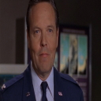

:/>SG COMMAND OPERATING SYSTEM
:/>SECURITY DATA
:/>ADMISSION BORDER
:/>LAUCH
| JOUEURS | GRADE | SCORE | AFFECT. |
|---|---|---|---|
| NouveauJoueur | > | > | |
| NouveauJoueur | > | > | |
| NouveauJoueur | > | > |
:/>
:/>
:/>
:/>
:/>
REGLES
Chaque catégorie comporte 10 questions. Une bonne réponse vaut 1 point, ces points s'ajoutent et d'additionnent au score sur le tableau des joueurs. Un grade vous sera donné en fonction de votre score suivant ces règles :
Inférieur a 10 = Caporal
Supérieur ou égal a 10 = Lieutenant
Supérieur ou égal a 15 = Capitaine
Supérieur ou égal a 20 = Major
Supérieur ou égal a 30 = Colonel
Egal a 40 = Général
Cliquez sur "Nouveau joueur" dans le tableau et entrez votre nom dans l'infobulle. Cliquez ensuite sur "Affecter" sur la ligne correspondante pour charger un joueur. Enfin, cliquer sur la catégorie de votre choix pour commencer le quizz correspondant.
BONNE CHANCE
Inscription des joueurs et enregistrement
L'ecran de gauche sur l'index contient un tableau dynamique. Chaque ligne du tableau représente un joueur différent (N°1,N°2,N°3). Cliquer sur "Nouveau joueur" permet d'ouvrir une infobulle (fonction "prompt") invitant a taper le nom du joueur. Une fois le nom entré, il s'inscrit a la place de "Nouveau joueur", et il n'est plus possible d'interagir avec le nom inscrit jusque ce que 'REINITIAL' ('remove') soit utilisé, et se déclare en variable 'nom 1,2,3'. Il s'enregistre dans le "Local Storage" sous forme de clé/valeur ('nouveau joueur1',nom1, etc...). Le local storage est dans ce cas utilisé pour conserver les données en cas de rechargement ou changement de page. (Nom, grade, score). La clé 'nouveau joueur1' désigne la valeur 'nom1', nouvellement créee, qui est la variable contenant le nom du joueur n°1.
Un grade est également associé au joueur et s'inscrit dans la colonne "grades". Ce grade, relatif au score, est stocké dans une variable (gradej1,gradej2...) qui est définie par défaut sur 'Caporal'. Ce grade est associé a un portrait le représentant. Le nombre de points (Une bonne réponse = 1 Point) est également affiché et correspond a la colonne "score" du joueur, Stocké dans une variable (scorej1, scorej2, scorej3), elle-meme la somme de quatre variables (scorej1ot, scorej1p, scorej1rp, scorej1g, etc...), correspondantes au score qui sera enregistré plus tard pour chacune des quatre catégories, 10 par catégorie, 40 points en tout au maximum. Les variables de score sont définie sur "0" par défaut. Le local storage maintiendra et mettra a jour les variables entre les pages, et les données et la progression seront automatiquement enregistrés et affichés dans le tableau.
Une fois un joueur inscrit, le bouton 'affect' permettra de choisir le joueur qui jouera le quizz, affichant sur l'ecran de droite les infos relatives au joueur (nom, grade, portrait de grade). Quand le joueur est affecté, les catégories deviennent cliquables et le jeu peut commencer. Le bouton "REINITIAL." supprime entièrement les données dynamiques, du tableau, du joueur affecté ainsi que le local storage.
Lancer et jouer un quizz
Le quizz se présente en 40 questions divisées par quatres catégories (10 questions chacunes). Les catégories sont indisponibles par défaut (pointerevent = none). Il faut selectionner un joueur préalablement inscrit en l'affectant.
Une fois un joueur inscrit, un bouton "AFFECT" apparait sur la ligne correspondante. Ce bouton permet de selectionner le joueur désiré et affiche dynamiquement ses données sur l'écran de droite (nom, grade et une image correspondante au grade du joueur), sous forme d'une carte d'accès du SGC. Il ajoute également au local storage la clé/valeur du joueur chargé ('joueurgo1', 'nom1') et le grade ('grade joueurgo1', 'gradej1'). Une fois chargé, les catégories deviennent accessibles, il est alors possible de commencer a jouer.
Une fois la catégorie lancé, la page change. Un bouton récapitulatif demandera confirmation pour continuer. Un bouton retour situé plus bas permet de revenir au menu principal. Appuyer sur le bouton recapitulatif le fera disparaitre pour dévoiler la première question. Les pages Quizz contiennent une question et trois réponses dont une seule est valide. Des boutons de type "radio" situés devant les réponses permettent de valider le choix. Un message dynamique vous indiquera si la réponse selectionnée est valide ou non. Un bouton "suivant" situé plus bas permet de passer a la prochaine question mais est incliquable tant qu'une réponse n'aura pas étée selectionnée. Pour chaque question, une image masquée par défaut faisant office d'indice peut etre dévoilée grace au bouton "Indice". Dévoiler l'indice ajoute -0.5 au score.
Après dix questions, le nom/grade ainsi que le score est affiché accompagné d'une image correspondant a un certain montant de points (meme modèle que les portrait de grade, mais sur 10 points). Le score est enregistré dans le local storage (scorej1ot, scorej1p, scorej1rp, scorej1g...), et sera récupéré sur l'index pour afficher ou mettre a jour le score du joueur, ainsi que son grade. Le bouton "Retour a la base" ramènera le joueur au menu principal.
Evolution et progression
Les scores et grades des joueurs, ainsi que la progression dans les catégories evolueront et seront sauvegardés au cour du jeu. Une fois le joueur chargé, cliquer sur une catégorie amènera sur la page du quizz selectionné. Un message recapitulatif contenant nom et grade dynamiques demandera confirmation du lancement, un bouton "Retour" situé plus bas permet de revenir au menu principal. Un fois lancé, le quizz devra etre accompli jusqu'au bout.
Une fois les dix questions passées, le total des points sera affiché, accompagné d'une image correspondante au score sur dix. A ce moment est ajouté au local storage le score pour ce joueur et sur cette catégorie (Clé/valeur = 'joueurgo1','scorej1ot', etc...), et sera additionné au score du joueur, et le grade mis a jour si possible. Cliquer sur le bouton "Retour" pour retourner au menu principal.
Un fois une catégorie accomplie (1 point minimum), le bouton correspondant changera d'état (transparence et image "declassified"), et ne sera plus cliquable, rendant la catégorie inaccessible et non rejouable. Les points accumulés a l'issue des quizzs s'additionnent et determinent le grade du joueur.
Le grade evoluera en fonction du score suivant ces règles :
Inférieur a 10 = Caporal
Supérieur ou égal a 10 = Lieutenant
Supérieur ou égal a 15 = Capitaine
Supérieur ou égal a 20 = Major
Supérieur ou égal a 30 = Colonel
Egal a 40 = Général
Quand les quatres catégories ont étées accomplies, le quizz est terminé pour le joueur en question. Si 40 points ont étés accumulés, un quizz secret sera débloqué et un effet visuel aura lieu sur le titre et la signature. Une fois que les trois joueurs ont terminé leur quizzs respectifs, seul "REINITIAL." permettra de liberer les emplacements de joueurs disponibles, ainsi que rendre les catégories a nouveau disponibles.
Table des grades
 |
|
|---|---|
| < 10 = Caporal | ≥ 10 = Lieutenant |
 |
 |
| ≥ 15 = Capitaine | ≥ 20 = Major |
|  | |
| ≥ 30 = Colonel | = 40 = Général |
:/>SG COMMAND OPERATING SYSTEM
:/>SECURITY DATA
:/>ACTUAL PROFIL
:/>LAUCH
:/>